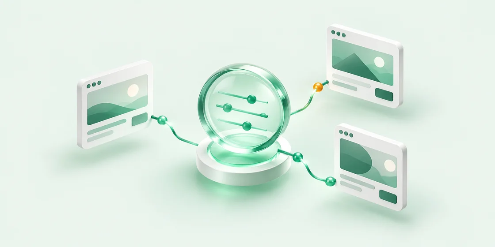

YOUR AD STACK, IN FOCUS
Every request.
Clearer insight.
A little clarity for your ad operations.
Inspect delivery, targeting, and privacy in one place.

Requests
0Captured this session
Ad slots
0Across captured requests
Fill rate
—0 filled · 0 unfilled
Avg. response
—Network request duration
Request stream
Listening for requests
A CLEAR VIEW STARTS HERE
Ready when your ads are
Reload the inspected page or trigger an ad request.
Your Google Ad Manager requests will appear here,
live.
Keep DevTools open while inspecting your page
No matching slots
Try another search or clear your filters.